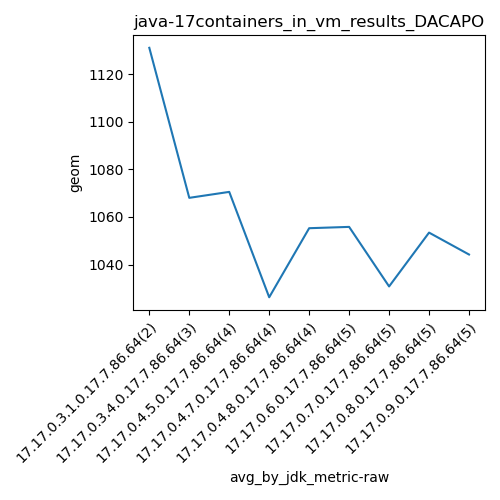
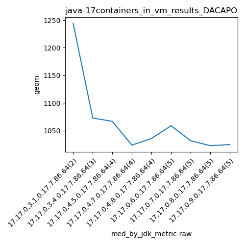

java-17 DACAPO
Context at bottom
/home/jvanek/git/benchmarks-in-nested-virtualisation-toolchain/final_results/containers_in_vm_results/containers_in_vm_results_J2DBENCH
java-17
DACAPO
/home/jvanek/git/benchmarks-in-nested-virtualisation-toolchain/final_results/containers_in_vm_results/containers_in_vm_results_RADARGUNs3
java-17
DACAPO
/home/jvanek/git/benchmarks-in-nested-virtualisation-toolchain/final_results/containers_in_vm_results/containers_in_vm_results_DACAPO
java-17
DACAPO
containers_in_vm_results_DACAPO
final score
Expected number of java-17 JDKs: 5
1st avgmed_alljdks_metric:
/home/jvanek/git/benchmarks-in-nested-virtualisation-toolchain/final_results/result_processing.py /home/jvanek/git/benchmarks-in-nested-virtualisation-toolchain/final_results/containers_in_vm_results/containers_in_vm_results_DACAPO geom False
values: [1244, 1018, 1093, 1073, 1038, 1096, 1067, 1053, 1066, 1024, 1013, 1049, 1019, 1036, 1027, 1149, 1009]

Expected number of iterations: 5
final number of values: 17 out of 25
Pass rate: 68.0%
values: (1009, 1244, 1063.1764705882354, 1049)

** accuracy from all jdks and runs
more is better
MIN: 1009
MAX: 1244
AVG: 1063.1764705882354
MED: 1049
Relative differences 1:
MIN-MAX: 19.0 %
MIN-AVG: 5.0 %
MIN-MED: 4.0 %
MAX-MIN: -23.0 %
MAX-AVG: -17.0 %
MAX-MED: -19.0 %
AVG-MED: -1.0 %
stored to java-17.properties. sort | uniq that!
2nd avgmed_by_jdk_metric:
values: [1131.0, 1068.0, 1070.5, 1026.25, 1055.25]

values: [1244, 1073, 1067, 1024, 1036]

values: (1026.25, 1131.0, 1070.2, 1068.0)
values: (1024, 1244, 1088.8, 1067)

** accuracy from all jdks where runs were avged
more is better
MIN: 1026.25
MAX: 1131.0
AVG: 1070.2
MED: 1068.0
Relative differences 1:
MIN-MAX: 9.0 %
MIN-AVG: 4.0 %
MIN-MED: 4.0 %
MAX-MIN: -10.0 %
MAX-AVG: -6.0 %
MAX-MED: -6.0 %
AVG-MED: -0.0 %
stored to java-17.properties. sort | uniq that!
** accuracy from all jdks where runs were medianed
more is better
MIN: 1024
MAX: 1244
AVG: 1088.8
MED: 1067
Relative differences 1:
MIN-MAX: 18.0 %
MIN-AVG: 6.0 %
MIN-MED: 4.0 %
MAX-MIN: -21.0 %
MAX-AVG: -14.0 %
MAX-MED: -17.0 %
AVG-MED: -2.0 %
stored to java-17.properties. sort | uniq that!
/home/jvanek/git/benchmarks-in-nested-virtualisation-toolchain/final_results/containers_in_vm_results/containers_in_vm_results_RADARGUNs1
java-17
DACAPO
/home/jvanek/git/benchmarks-in-nested-virtualisation-toolchain/final_results/containers_in_vm_results/containers_in_vm_results_SPECJBB
java-17
DACAPO
/home/jvanek/git/benchmarks-in-nested-virtualisation-toolchain/final_results/containers_in_vm_results/containers_in_vm_results_JMH
java-17
DACAPO
pass rates:
containers_in_vm_results_DACAPO=68.0%
Context:
- containers_in_vm_results
- DACAPO